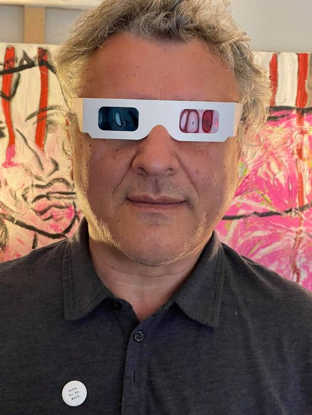

Alex Bunardzic
Business Velocity Architect, Experienced Software Philosopher

Business Velocity Architect, Experienced Software Philosopher. TDD, mutation testing, shift-left, service virtualization, CI/CD, TBD
Alex has been doing software development since 1990. His professional passion is bringing soft into software. Which means software must be soft, maleable, pliable. That quality enables the flexibility of the business operations.
In order to make sure that software we are building is flexible, we must evolve it one step at a time. Each step (and the smaller that step is, the better) must get verified by automated testing. Early failures are welcome, because they are small and they force us to fix them right away. In the software engineering discipline, giant steps are foolish steps. It is more prudent to stay with small steps (many, many small steps) on our journey to deliver value to customer satisfaction.
Move fast to delight customers!